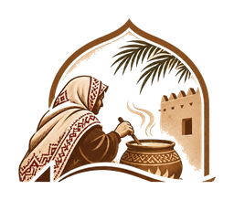
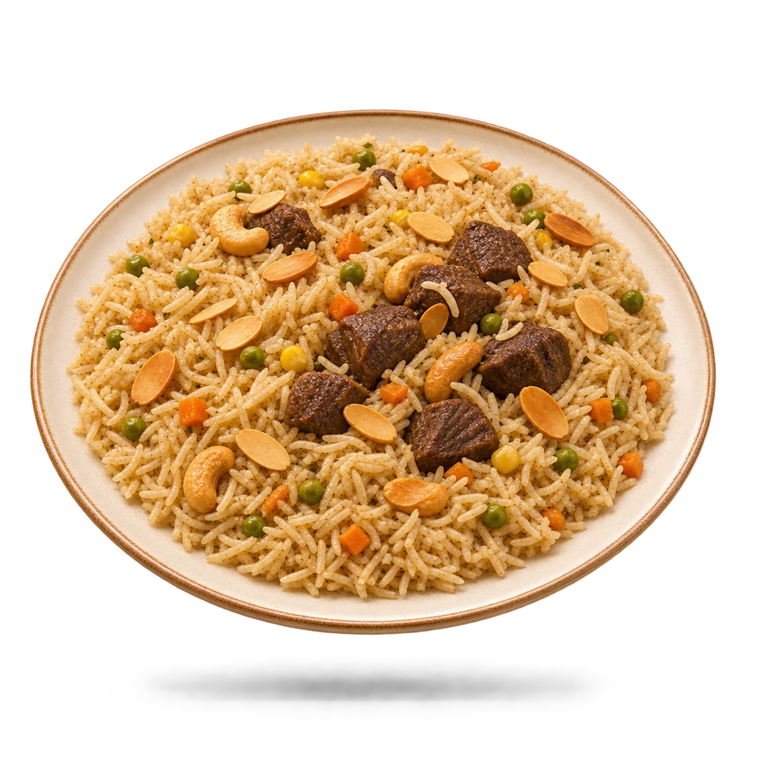

أكلات جدتناأكلات شعبية من بيوت أهلنا
أكل بيت جدتك،
من أسرة في حيّك
أسر منتجة تُراجَع مستنداتها، تطبخ في مدينتك. شوف الأطباق والأسعار، واطلب منهم مباشرة.

كل أسرة تُراجَع مستنداتها قبل الظهور.
أسر تطبخ قريب منك
 مطبخ أم سالمالرياض · مرقوق، جريش
مطبخ أم سالمالرياض · مرقوق، جريش
سفرة أم فهدالرياض · كبسة، مندي بيت القرصانالخرج · قرصان، معصوب
بيت القرصانالخرج · قرصان، معصوب صينية سمكسفرة أم فهد
صينية سمكسفرة أم فهد